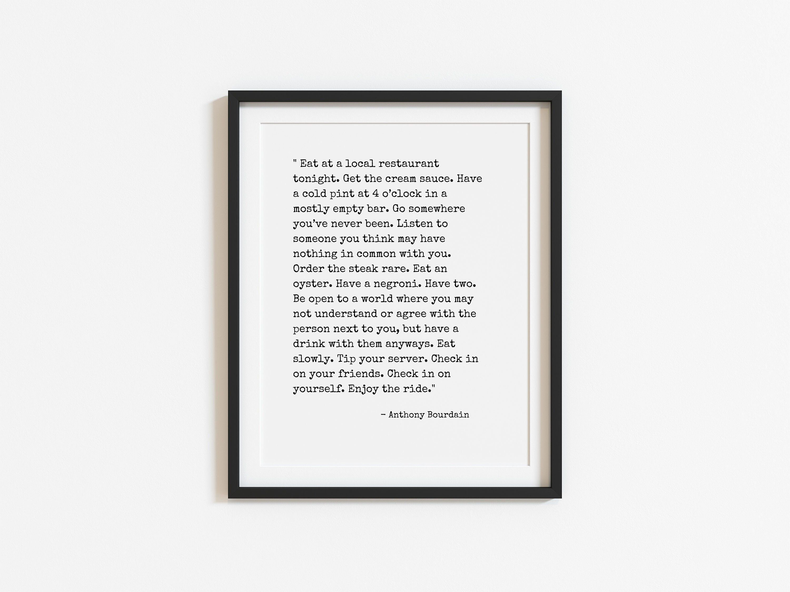
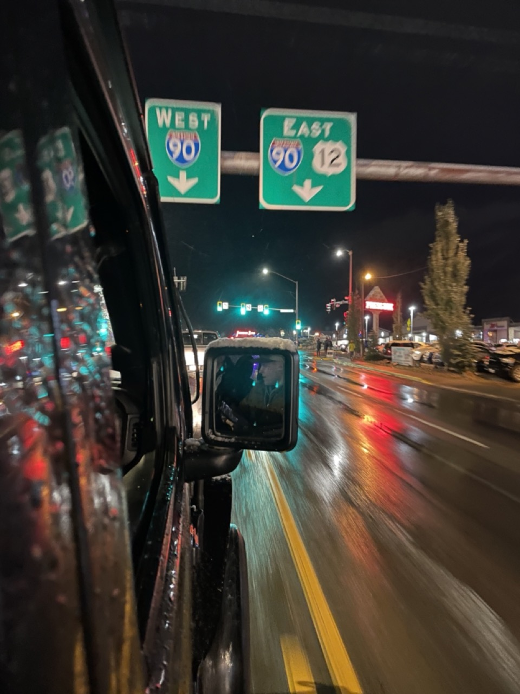

Why I believe it is important to...
why stepping out of your comfort zone is crucial
Stepping out of your comfort zone is one of the hardest things an individual can do. Though very subjective, stepping out of your comfort zone can be as simple as going to a hole in the wall restaurant you drive by all the time, or trying a new hobby you've always been interested but never felt you had the time to try. Take the leap. Try something new and different. Embrace this discomfort; the discomfort of not being good at something, not knowing what to expect, or something that is somewhat foreign. This should be done safely, but all things were once unfamiliar to us and we needed to try. Growing up, I was fascinated by stories of mountaineers, climbers, explorers, and trailblazers. Stories of adventure and mystery always piqued my interest. To me, this spirit of exploration extends into my love of travel and road trips, capturing moments on my camera, or writing. My appreciation for the natural world and all its unique intricacies. We're all explorers in our micro sense, plain and simple.

This quote from Anthony Bourdain has been really influential to my view of enjoying the little things in life. Seeking these little moments are what I think "exploring" is all about.

Capturing life's little moments are what it is all about to me, because at the end of the day, our memories both on our own or with others are what we've got. What we look back on and smile about and remind us of all the great things we have yet to do.